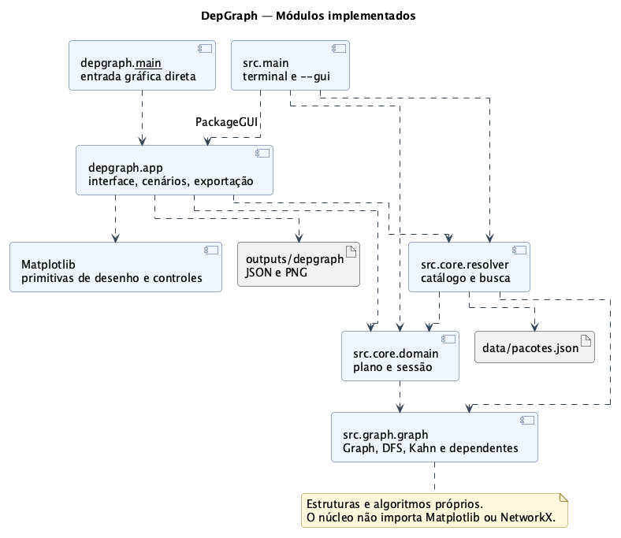
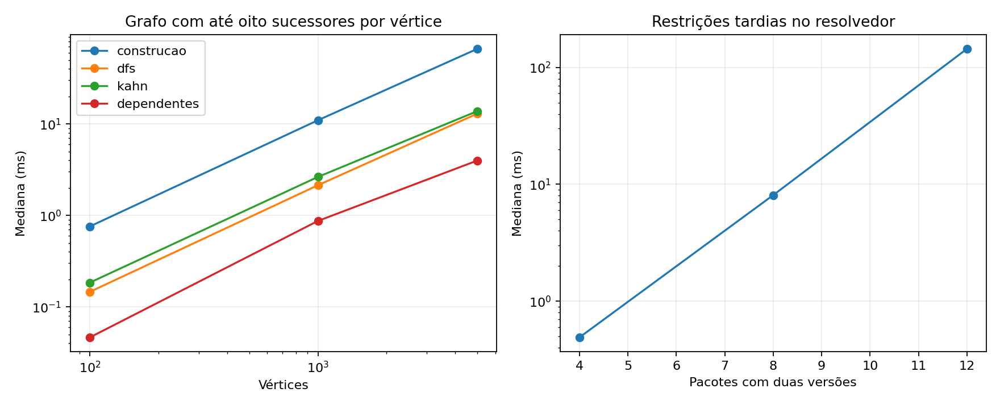

Grafo próprio, resolução de versões e execução simulada segura.
Engenharia de Software · PUC Minas
O problema
Aplicações compartilham bibliotecas e exigem versões específicas.
Dependências podem formar ciclos.
Um grafo sem ciclos ainda pode ter versões incompatíveis.
Precisamos explicar o bloqueio ou construir uma ordem segura.
Entrada: catálogo + instalados + pedidos. Saída: plano executável na simulação ou diagnóstico.
Como o grafo representa o problema
Vértice: nome do pacote, com versão selecionada.
A → B: B depende de A.
Ordem topológica: pré-requisitos antes dos dependentes.
Conflitos e restrições de versão são verificados separadamente.
Catálogo didático: 27 nomes, 32 versões e dois instalados inicialmente.
Arquitetura implementada

Catalog concentra a resolução; Session gerencia a transação. Interface desktop em Python com Matplotlib para desenho, controles e cliques.
Algoritmos próprios
Kahn: emitir vértices de grau de entrada zero; rejeitar ordem incompleta.
DFS iterativa: aresta para vértice cinza fecha um ciclo real.
Dependentes: percorrer sucessores com fila e visitados.
Tempo dos três percursos: O(V + E). Estrutura: O(V + E).
A busca de versões usa backtracking e pode ser exponencial.
Versões e execução segura
Tentar versões compatíveis e descartar inteiramente ramos falhos.
Preservar instalados; atualizar nomes explicitamente solicitados.
Preparar uma operação por avanço, sem confirmação parcial.
Validar o estado final antes de confirmar a última operação.
Limite de busca significa resultado inconclusivo.
Demonstração da ferramenta
python -m src.main --gui
Mostrar o plano do ambiente gráfico e preparar um pacote.
Concluir: os instalados passam de dois para dezessete.
Comparar incompatibilidade de versões com dependência circular.
Mostrar a escolha de versão alternativa e o impacto de remoção.
Simulação em memória: nenhum comando Linux é executado.
Evidências de correção
41 testes de grafos, cenários e integração.
Oito cenários exercitados com importação de NetworkX bloqueada.
Oráculo independente: 4.627 grafos pequenos, zero divergências.
Casos de falha preservam instalados; recusa na confirmação permite nova tentativa.
Essas evidências não equivalem a prova de todos os catálogos ou interações possíveis.
Resultados de desempenho

294 medições de tempo, sete repetições por configuração. Doze escolhas binárias: 12.286 tentativas e mediana de aproximadamente 144,22 ms nesta execução.
Conclusões e limites
Dependências, ciclos, visualização e ordem segura atendem ao núcleo do tema.
Processamento de grafo implementado pelo projeto.
Resolução de versões e algoritmos de grafo têm custos distintos.
Dados sintéticos e versões simplificadas limitam generalização.
Sem instalação real, alternativas Debian ou otimização global.
Próximas evoluções: encapsulamento e bases reais com transformação documentada.